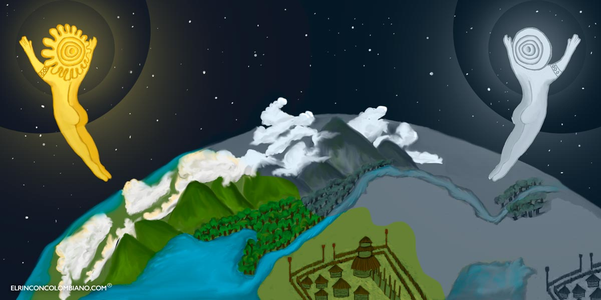
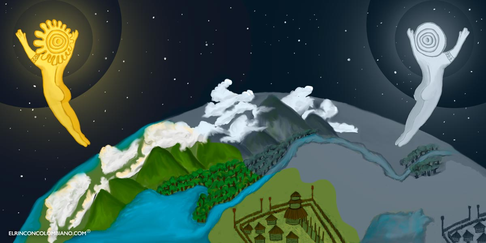

La Creación en la Cultura Chibcha
En este blog abordaremos la creación chibcha y su relevancia en la cultura muisca. Este antiguo relato
¿Que trata?
Según la mitología Chibcha, Chiminigagua es el ser supremo, omnipotente y creador del mundo. En un principio, todo estaba en tinieblas, y solo reinaba la luz de Chiminigagua. Aquí está el relato conciso sobre el origen del universo según esta fascinante creencia: Cuenta la historia que, en el principio del mundo, todo estaba en tinieblas y solamente reinaba la luz de Chiminigagua. Cuando el dios creador quiso difundir la luz por todo el universo, creó dos grandes aves negras y las lanzó al espacio. Estas aves, al exhalar aire por sus picos, esparcían una luz incandescente, iluminando todo el cosmos. Así se hizo la luz y se crearon todas las cosas del mundo.
En el proceso de creación de todo lo existente en el universo, Chiminigagua señaló la importancia de adorar al sol o Suhá y a su mujer y compañera Chía, o la luna. La adoración al sol y a la luna, para los Chibchas, era la adoración a Chiminigagua, el ser supremo.

Significado y Simbolismo
En este blog abordaremos la creación chibcha y su relevancia en la cultura muisca. Este antiguo relato
¿Que trata?
Según la mitología Chibcha, Chiminigagua es el ser supremo, omnipotente y creador del mundo. En un principio, todo estaba en tinieblas, y solo reinaba la luz de Chiminigagua. Aquí está el relato conciso sobre el origen del universo según esta fascinante creencia: Cuenta la historia que, en el principio del mundo, todo estaba en tinieblas y solamente reinaba la luz de Chiminigagua. Cuando el dios creador quiso difundir la luz por todo el universo, creó dos grandes aves negras y las lanzó al espacio. Estas aves, al exhalar aire por sus picos, esparcían una luz incandescente, iluminando todo el cosmos. Así se hizo la luz y se crearon todas las cosas del mundo.
En el proceso de creación de todo lo existente en el universo, Chiminigagua señaló la importancia de adorar al sol o Suhá y a su mujer y compañera Chía, o la luna. La adoración al sol y a la luna, para los Chibchas, era la adoración a Chiminigagua, el ser supremo.

Significado y Simbolismo
- Elementos Naturales: La interacción de los dioses con elementos naturales como el sol, la luna y la tierra refleja la profunda conexión de los muiscas con su entorno. El mito subraya la importancia de la naturaleza en la vida diaria y en la espiritualidad chibcha.
- Luz y Oscuridad: La creación comienza con la dispersión de la luz por Chiminigagua, simbolizando el paso del caos a la orden. La luz es un símbolo de conocimiento, vida y poder divino.
- Chía (Huitaca): Como diosa de la luna, Chía simboliza la feminidad, la noche y la fertilidad. Su presencia complementa la de Bochica, estableciendo un equilibrio entre lo masculino y lo femenino, lo diurno y lo nocturno.